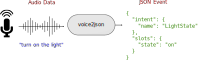

voice2json is a set of command-line tools for offline, multilingual speech/intent recognition. It recognizes and transforms your custom voice commands into JSON events.
voice2json is...
- Free and fully open source
- Completely offline, no account or internet connection required
- Multilingual, with support for 13 languages
- Easily integrated with Node-RED, Home Assistant, and Hass.io
voice2json is not...
- A magic machine learning system that tries to guess what you want
- A general purpose speech/intent recognizer
- Usable "out of the box" with no tinkering
Getting Started
Run with Docker
docker run -d \
-v "${HOME}:${HOME}" \
-w "$(pwd)" \
-u "$(id -u):$(id -g)" \
voice2json/voice2json setup Contributing
Want to contribute? Follow these recommendations.